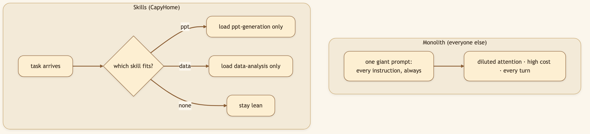
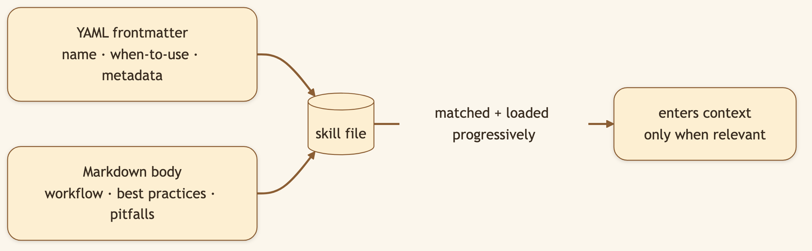
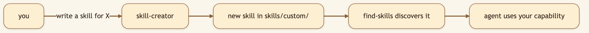

LinkedIn hook (use as the post's first line): "There are two ways to make an AI agent capable. One is to cram every instruction into one giant prompt — slow, confused, expensive. We took the other path: modular Skills that load only when the task needs them." Audience: LinkedIn → Medium. Prompt/agent engineers, builders fighting context bloat and cost.
Imagine teaching someone to cook by reading them the entire cookbook — every recipe, every technique — before they're allowed to make toast. That's what a monolithic system prompt does to an agent. Every token of "how to build a PowerPoint" sits in context even when you asked a one-line question, diluting attention and inflating cost.
Skills solve this like a good reference library: the knowledge exists, but you only pull the relevant book off the shelf when you need it.
🖼️ [User add: image containing — a "bloated prompt vs. progressive skills" comparison graphic. Left: one giant scroll. Right: a shelf of small skill cards with one glowing as "loaded now." LinkedIn carousel material.]


20+ skills across the spectrum of real work — proof this isn't a coding-only tool:
| Category | Skills |
|---|---|
| Research | deep-research, github-deep-research, find-skills |
| Generation | ppt-generation, podcast-generation, video-generation, pdf-pro |
| Data | data-analysis, excel-modeling, chart-visualization, consulting-analysis |
| Design | frontend-design, web-design-guidelines, bootstrap |
| Workflow | batch-workflow, dreamy-workflow |
| Meta | skill-creator, knowledge-vault, surprise-me |
"Make me a slide deck," "model this in a spreadsheet," "draft a podcast," "analyse this dataset" each quietly pull in the one skill built for that craft — and only that one.

🖼️ [User add: image containing — a real skill file open in an editor (YAML frontmatter + markdown body), e.g. skills/.../ppt-generation. A clean screenshot of the file.]
skills/custom/ (gitignored — it stays yours). skill-creator scaffolds new ones for you; find-skills lets the agent discover which capability it needs; surprise-me picks something fun.skills/custom/? Your proprietary workflows are yours. Keeping custom skills out of the repo by default means your edge doesn't leak into a public tree.skill-creator skill? The fastest way to grow capability is to let the agent help build the modules that make it more capable — meta, but it removes the blank-page friction of authoring.[0:00–0:10] Hook: "Counterintuitive: the secret to a more capable AI agent is giving it fewer instructions at a time."
[0:10–0:30] Screen — ask for a slide deck, then a data analysis: "I ask for a slide deck — it pulls in just the presentation skill. Then I ask for a data analysis — different skill, loaded only now. The agent never carries instructions it doesn't need."
[0:30–0:50] Screen — skill-creator scaffolds one: "And these are just files. I can write my own — or have skill-creator scaffold one for me — and the agent immediately knows the new trick."
[0:50–1:00] Close: "A calm generalist that's genuinely good at specific crafts, because it only thinks about what's in front of it. Open source, link below."
Ask for something specific — "build a 10-slide deck on X" — and watch the relevant skill engage. Then scaffold your own with
skill-creator.